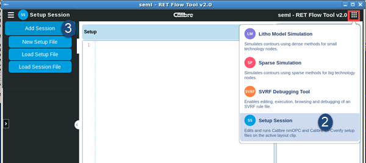

Create a new Setup Session by opening an
existing Calibre nmOPC or Calibre OPCverify setup command file,
or by opening a saved session file.
Procedure
- Open the
Calibre RFT v2.0 GUI.
- Click the
model selector button in the upper right corner (red box in the
figure). Choose Setup Session as the session
type.
Figure 1. Open
Setup Session 
- Hover your
cursor over Add Session. Choose one of the
following options:
New Setup File —
If you do not have a setup command file, choose this option. This opens
a blank page.
Load Setup File —
If you have a setup command file available, choose this option to
load it.
Load Session File —
If you have a previously saved Setup Session file available, choose
this option to load it.